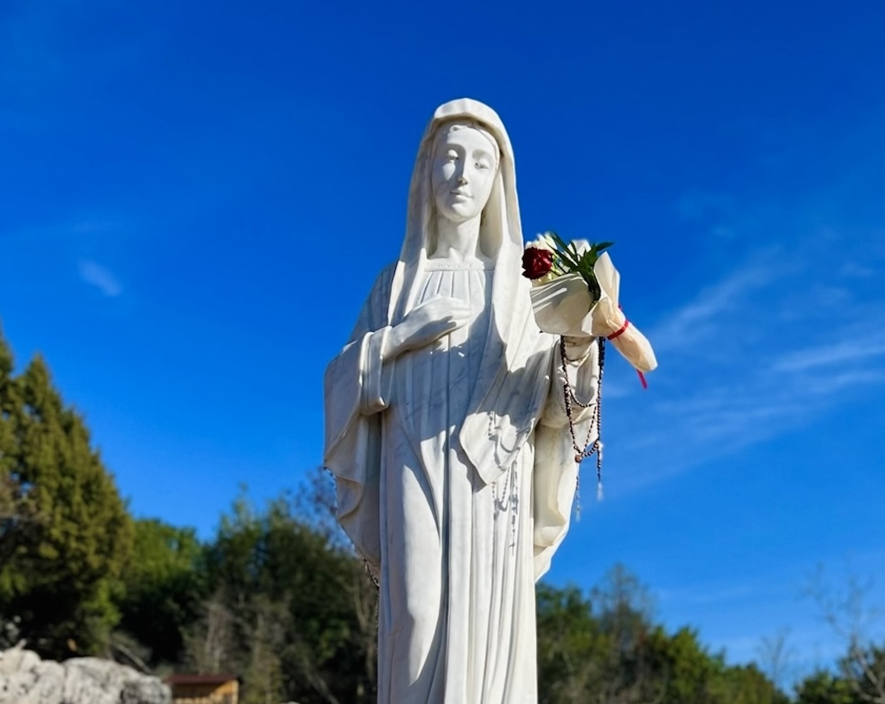

Experimenta Peregrinaciones Católicas
Embárcate en un viaje espiritualmente enriquecedor con nuestras peregrinaciones católicas curadas, explorando sitios sagrados en todo el mundo.

Lourdes
Experimenta sanación y fe en este renombrado santuario mariano.

Fátima
Visita donde Nuestra Señora se apareció a tres pastorcitos.

Medjugorje
Presencia el sitio de las apariciones marianas modernas.